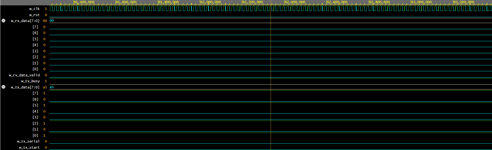

Full-Duplex UART Core in VHDL-2008
Synthesizable 8-N-1 serial transceiver designed from digital primitives with 2-stage metastability synchronization, mid-bit glitch rejection, double-buffered reception, zero-lag TX assertion, and automated self-checking loopback testbenches.
01 / Silicon Serial Communication Fundamentals
While microcontrollers hide serial communication behind fixed hardware registers, implementing a UART on an FPGA requires building the underlying shift registers, bit-period counters, edge synchronizers, and glitch filters directly in synthesizable RTL.
The standard 8-N-1 UART protocol transmits parallel byte data across a single asynchronous physical line:
- Idle Line: Held stably high (logic
'1') when no traffic is present. - Start Bit: Driven low (logic
'0') for exactly 1 bit-period to signal the beginning of a frame. - Data Bits: 8 bits serialized least-significant bit (LSB) first.
- Stop Bit: Driven high (logic
'1') for 1 bit-period to demarcate the frame boundary and reset line bias.
Because incoming serial data originates from an external, unsynchronized clock domain, directly feeding the RX pin into sequential logic causes metastability—inducing indeterminate logic levels and corrupting state transitions. Robust silicon engineering requires double-register synchronization and mid-period verification.
02 / RTL Architecture & State Machine Design
The architecture partitions cleanly into two independent synthesizable modules: the transmitter (uart_tx in UART.vhd) and the receiver (uart_rx in UART_TB.vhd), coordinated via parameterized generic timers:
Silicon Fix: Zero-Latency Start Bit Assertion
In naive UART state machines, asserting i_tx_start moves the FSM to ST_START_BIT on clock tick $N$, but only begins driving the physical line low on tick $N+1$.
In this hardened implementation, r_tx_serial <= '0' and r_tx_busy <= '1' are asserted immediately within the ST_IDLE branch when i_tx_start = '1', eliminating startup jitter and achieving immediate cycle-accurate transmission.
03 / Parameterized Timing & Integer Rounding
The baud rate generation is fully parameterized via a single compile-time generic, g_CLKS_PER_BIT. To avoid accumulative phase drift across asynchronous clock ratios, the clock division calculation employs half-baud integer rounding:
Adding c_BAUD_RATE / 2 implements round-to-nearest integer arithmetic instead of truncating division. Both modules enforce generic parameter bounds at synthesis time:
| System Clock (`c_CLK_FREQUENCY`) | Target Baud Rate | Calculated `g_CLKS_PER_BIT` | Mid-Bit Sample Point | Baud Error Margin |
|---|---|---|---|---|
| 50.000 MHz | 9,600 baud | 5,208 clock cycles | Cycle 2,603 | < 0.008% (Exact) |
| 50.000 MHz | 115,200 baud | 434 clock cycles | Cycle 216 | < 0.076% (±2% RS-232 limit) |
| 100.000 MHz | 115,200 baud | 868 clock cycles | Cycle 433 | < 0.038% |
04 / Synthesizable VHDL Core Implementation
The RTL is written cleanly to IEEE-1164 standards, ensuring portability across Xilinx Vivado, Intel Quartus, Lattice Diamond, and open-source toolchains (GHDL, Yosys):
In the receiver, double-buffering ensures that downstream systems never read partial or unstable data during active shift reception:
05 / Automated Self-Checking Verification Suite
The verification harness tb_uart instantiates the transmitter and receiver in a closed loopback topology. Rather than relying on manual visual waveform inspection, it executes an automated assertion procedure with strict timeouts:
| Test Case | Bit Pattern / Scenario | Verification Purpose |
|---|---|---|
| Test 1: `0xA5` | `10100101` | Validates maximum alternating bit transition density & timing integrity. |
| Test 2: `0x3C` | `00111100` | Validates nibble boundaries and multi-cycle static signal states. |
| Test 3: `0x00` | `00000000` | Boundary test: confirms start bit isn't confused with 8 consecutive data zeros. |
| Test 4: `0xFF` | `11111111` | Boundary test: confirms idle line isn't confused with all-ones payload. |
| Test 5: Back-to-Back | `0x55` immediately followed by `0xAA` | Stress test: verifies zero inter-frame gap handling without stop-bit clipping. |
06 / Simulation Waveforms & Automated Pipeline
The design is verified via GHDL and visualized in GTKWave. Below is the captured simulation waveform showing loopback serial framing, bit sampling, and immediate bus latching:

The repository includes a turnkey script, run_sim.sh, that automates compilation, elaboration, and waveform dumping using standard IEEE libraries: